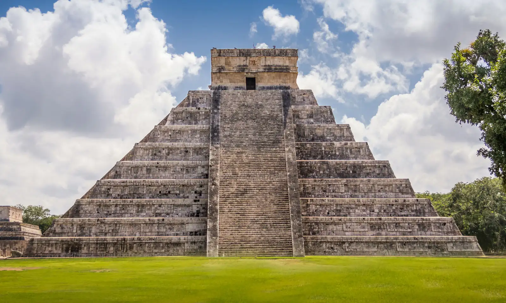

Chichén Itzá
Chichén Itzá is a Mayan city on the Yucatán Peninsula in Mexico, which flourished in the 9th and 10th centuries CE. Under the Mayan tribe Itzá—who were strongly influenced by the Toltecs—a number of important monuments and temples were built. Among the most notable is the stepped pyramid El Castillo (“The Castle”), which rises 79 feet (24 meters) above the Main Plaza. A testament to the Mayans’ astronomical abilities, the structure features a total of 365 steps, the number of days in the solar year. During the spring and autumnal equinoxes, the setting sun casts shadows on the pyramid that give the appearance of a serpent slithering down the north stairway; at the base is a stone snake head. Life there was not all work and science, however. Chichén Itzá is home to the largest tlachtli (a type of sporting field) in the Americas. On that field the residents played a ritual ball game popular throughout pre-Columbian Mesoamerica.